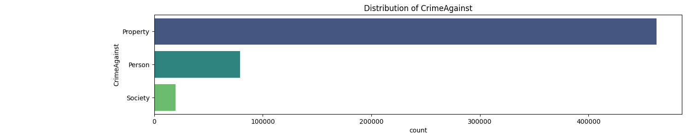
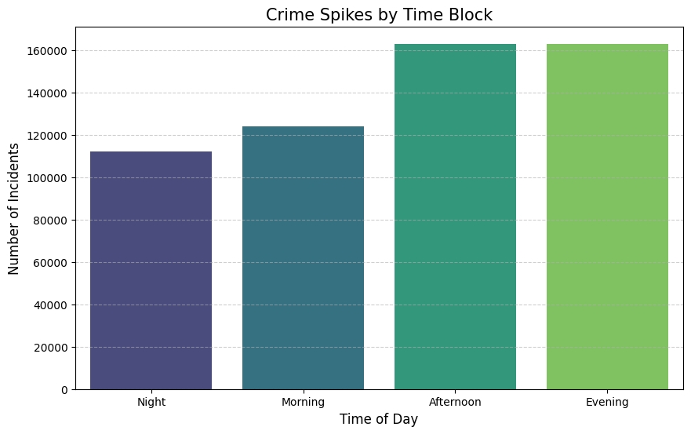
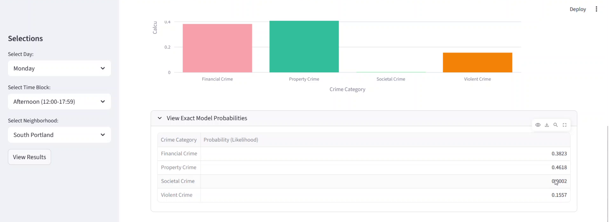

model three
A Random Forest classifier trained on nine years of Portland crime data to predict the most likely category of crime for a given neighborhood, day of week, and time block - deployed as an interactive Streamlit dashboard.

Class distribution of the raw crime data - Property-related incidents outnumber Person and Society incidents by a wide margin, which turned out to be the central challenge for the model: without correction it just learns to guess "Property" every time.

Incident volume by time block - crime activity climbs steadily from night into morning and peaks in the afternoon and evening, which is what motivated using time block (rather than raw hour) as a model feature.

The live dashboard in action - for South Portland on a Monday afternoon, the model puts Property Crime as most likely (46.2%), followed by Financial Crime (38.2%), Violent Crime (15.6%), and Societal Crime (under 1%).
Portland's open crime dataset (2015-2024, roughly 560,000 logged incidents) records what happened, where, and when, but doesn't surface it in a way anyone could actually plan around. The goal was to turn that raw log into something usable: given a day of the week and a time block, which neighborhoods are more likely to see which kind of crime, and by how much.
Started with exploratory analysis of offense category, offense type, neighborhood, and time fields, then engineered day-of-week, month, weekend flag, and a custom time-block bucketer (Midnight, Morning, Afternoon, Evening) out of the raw date and time columns. The dozens of specific offense types were too fragmented to predict reliably on their own, so they were grouped into four broader categories - Violent, Property, Societal, and Financial crime - which became the model's prediction target. Day, time block, and neighborhood were encoded as features and fed into a Random Forest classifier, with custom class weights applied during training to push back against how heavily the dataset skews toward property crime. The trained model was then wrapped in a Streamlit dashboard: pick a day and a time block, and it returns the most likely crime category for every neighborhood along with a confidence score and the full probability breakdown.
The class imbalance turned out to be a persistent problem rather than a one-time fix. An earlier three-class version of this model, evaluated on held-out data, illustrates it clearly: about 76% overall accuracy, but nearly all of that came from correctly calling the majority Property class (89% recall), while the minority classes managed only around 16% recall each even after weighting them up to 6× more heavily during training. The deployed dashboard's four-category model shows the same pattern in practice - in the example above, Property and Financial crime absorb most of the predicted probability while Societal crime is barely registered. The dashboard is functional and returns plausible, differentiated predictions across neighborhoods, but the underlying confidence in any single likelihood number is still limited by that imbalance.
The most useful next step is a legend or key on the dashboard itself explaining what each crime category actually includes, since "Societal Crime" or "Financial Crime" isn't self-explanatory to a user without context. Beyond that, the imbalance problem would benefit from techniques beyond class weighting alone - resampling, a hierarchical model that first predicts common vs. rare crime, or simply being more transparent in the UI about how uncertain the minority-class predictions are.